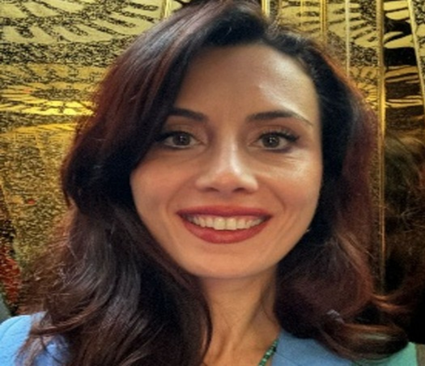

Görme ve işitme engelli bireyler arasında çift yönlü iletişimi sağlayan, yapay zekâ destekli yerli ve milli web tabanlı iletişim platformu.
Neden buradayız ve neyi değiştiriyoruz?
Görme ve işitme engelli bireyler arasındaki iletişim, mevcut koşullarda oldukça sınırlı kalmaktadır. İşaret dili görme engelliler için erişilebilir değilken, sesli iletişim de işitme engelliler açısından yetersizdir. İki farklı engel grubunun eşzamanlı iletişimini sağlayan bütüncül çözümler oldukça kısıtlıdır.
Kamera aracılığıyla algılanan işaret dili hareketlerini metne ve sese dönüştüren; aynı zamanda mikrofondan alınan sesli konuşmaları anlık olarak metne ve işaret diline çeviren çift yönlü bir iletişim ağı kuruyoruz.
Piyasadaki diğer sistemlerden farkımız ne?
Sadece işaret dilini metne çevirmekle kalmaz, hem metin hem de ses girdilerini gerçek zamanlı olarak Türk İşaret Dili'ne (TİD) çevirir.
Proje tamamen TİD'ye göre optimize edilmiştir. Kendi oluşturduğumuz 5000'den fazla veri içeren TİD veri seti ile eğitilmiş modellere sahiptir.
Görme ve işitme engellilerin doğal etkileşimlerini gerçek zamanlı olarak dönüştüren öğrenen sistem altyapısıyla çalışır.
Görme engelliler için sesli yönlendirmeli, işitme engelliler için görsel destekli erişilebilir kullanıcı deneyimi.
Yüksek doğruluk ve düşük gecikme süresi ile kesintisiz bir iletişim deneyimi için en güncel teknolojileri bir araya getirdik.
Projeye hayat veren ekip
Bilecik Şeyh Edebali Üniversitesi - İstatistik Ve Bilgisayar Bilimleri Bölümü

Bilecik Şeyh Edebali Üniversitesi - Yönetim Bilişim Sistemleri Anabilim Dalı